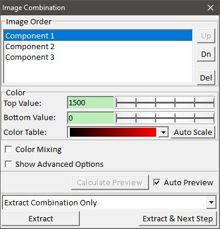
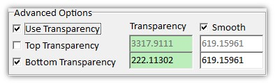
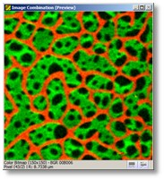
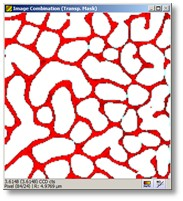

|
|
描述
图像合并对话框可用于将多个强度图像组合成一个彩色合并位图，每个图像使用不同的颜色表。
输入与结果
输入：
任意数量的图像数据对象。
结果：
一个彩色合并位图对象。
用户界面

图像顺序（列表框）
显示图像列表。您可以在此选择图像以定义其颜色比例、颜色表和（在高级模式下）透明度阈值。
上/下（按钮）
这些按钮允许您更改图像顺序。仅在使用高级模式的顶部或底部透明度时需要。
删除（按钮）
从对话框中移除当前选定的图像（仅从对话框移除）。
顶部/底部值（编辑框和滑块）
更改当前选定图像的顶部和底部颜色比例。在高级模式下，您也可以使用预览图像查看器（"透明度掩模"）颜色比例功能来设置当前图像的颜色比例。
颜色表（组合框）
更改当前选定图像的颜色表。
自动比例（按钮）
这将对当前选定图像进行自动颜色比例调整。
颜色混合（复选框）
如果勾选，所有图像的颜色将对每个图像像素进行求和/混合。如果不勾选，对话框会自动决定在某个像素显示哪个图像：将显示颜色最亮的图像。这可以被视为一种自动掩模算法。
显示高级选项（复选框）
显示用于定义自定义透明度的高级选项：

使用透明度（复选框）
如果勾选，可以使用用户定义的透明度阈值来定义图像的哪些部分是透明的（让"下方"的图像透过另一图像显示出来）。
使用顶部透明度（复选框）
如果勾选，所有值高于所输入顶部透明度值的像素都是透明的。
使用底部透明度（复选框）
如果勾选，所有值低于所输入底部透明度值的像素都是透明的。通常只需要增加每层的这个值即可创建漂亮的图像。
透明度（编辑框）
定义哪些像素应为透明的阈值。
平滑（复选框和编辑框）
使用这些参数可以更平滑地绘制透明度过渡。值为零意味着透明度/不透明度的边界不进行平滑处理。
计算预览（按钮），自动预览（复选框）
参见自动预览。
提取模式（组合框）
提取（按钮）
计算结果位图（如果尚未计算）并将其添加到当前项目中。根据提取模式，还会提取所有图像的所有位图。
预览窗口

第一个预览图像查看器显示合并彩色位图的预览。

第二个预览图像查看器显示选定的图像及其透明度掩模。此查看器仅在高级模式或选择了提取模式"使用查看器导出设置提取所有图像"时可见。您可以使用此查看器的颜色比例功能来设置当前选定图像的颜色比例。